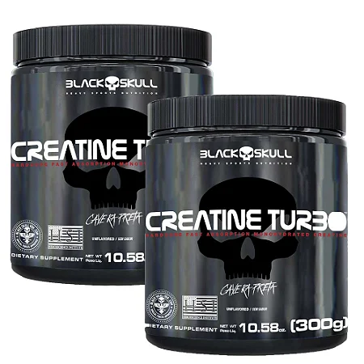
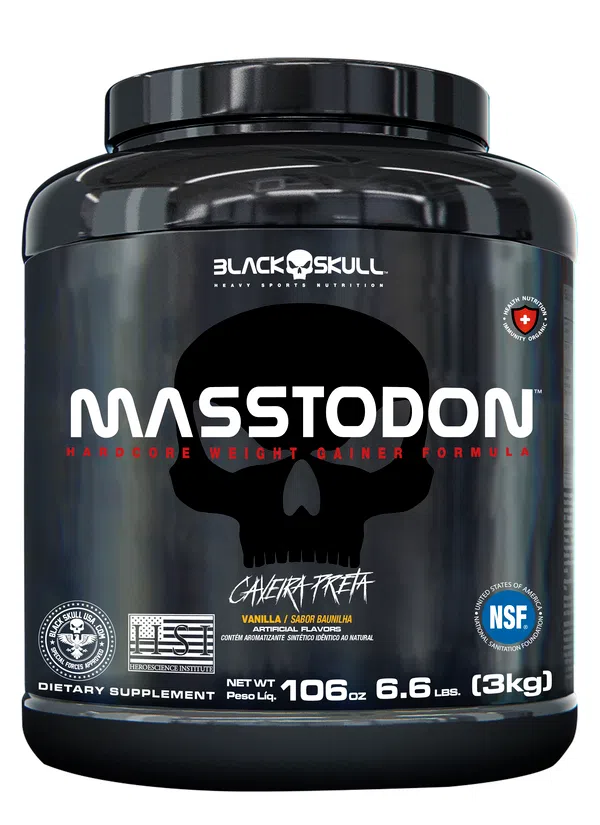

Suplementos
Se você já começou, ou vai começar, a treinar, certamente já ouviu alguém dizendo que está tomando um suplemento. Mas você sabe exatamente o que é isso?
Como dissemos na introdução deste post, o suplemento traz a ideia de suprir carências nutricionais. Normalmente, o suplemento vem em cápsulas ou em pó. É importante ressaltar que todos apresentam uma indicação para o consumo, por isso, não comece a ingerir nenhum deles sem a orientação de um profissional.
Os objetivos pessoais norteiam cada caso. Quem quer seguir para o lado do ganho de massa, por exemplo, utiliza um suplemento para musculação com bastante proteínas. Elas oferecem um aglomerado fundamental para o corpo construir o tecido muscular. Além disso, ajudam na recuperação das lesões após treinos mais pesados.
- Creatina
- Whey Protein
- BCAA
- Beta-Alanina
- Glutamina
- Arginina
- Multivitamínico
4 SUPLEMENTOS E O QUE DE FATO ELES FAZEM NO SEU CORPO
SUPLEMENTO X ANABOLIZANTE
Black Skull
A Black Skull U.S.A é uma marca de suplementos alimentares com foco em atletas de alta performance. Nossa sede no Brasil está alocada em Embu das Artes – SP, com mais de 12.000 m² de área construída, com alta capacidade produtiva.
Nossos produtos trabalham com as melhores matérias-primas do mercado e tem como principal característica maior concentração de insumos, que proporcionam níveis de pureza mais altos e por consequência otimizam a qualidade de nossos produtos.

Creatina
Creatina é um composto produzido pelos rins, fígado e pâncreas e é armazenada, em sua maior parte, nas fibras musculares. Ela também pode ser encontrada em alimentos como carnes e peixes.
A cada 1kg de carne vermelha, encontra-se 5g de creatina. O papel primário da creatina intramuscular é fornecer energia para as células musculares durante exercícios de resistência e sprint de alta intensidade
Em termos técnicos: a concentração de fosfocreatina no músculo é 3 a 4x maior do que a de ATP, mas pode ser esgotada rapidamente durante exercícios de resistência e sprint de alta intensidade. A co-ingestão de carboidratos com creatina potencializa o aumento mediado pela insulina no transporte de creatina, maximizando os estoques intramusculares de creatina, e também maximizando o conteúdo de glicogênio muscular quando combinado com exercícios de resistência e sprint de alta intensidade
É comum que atletas e praticantes de atividade física, como musculação, dentre outras modalidades, inclusive esportes de alta performance, façam o uso de creatina na forma de suplemento com o objetivo de melhorar o rendimento nos treinos e/ou competições, ter um aporte maior de energia e diminuir o risco de lesões.
Whey Protein
O whey protein isolado (WPI) é um dos três tipos de Whey Protein presentes no mercado. Ele é obtido através da microfiltração da proteína do soro do leite concentrada (WPC). Esse processo consiste em segregar as moléculas de gordura e carboidrato das proteínas, resultando em um produto com concentração proteica superior a 90% e baixos teores de gorduras e carboidratos.
Whey Protein é uma proteína de alto valor biológico derivada do soro do leite classificada conforme o seu grau de processamento, como: proteínas concentradas, isoladas e hidrolisadas. Este suplemento é utilizado para complementar o aporte proteico de uma dieta. Pessoas que buscam a hipertrofia e possuem carga de treinos intensa geralmente demandam um aporte de proteína maior para evitar o anabolismo muscular e auxiliar na recuperação das fibras musculares.
O whey protein isolado é um produto rico em proteínas e com baixo teor de carboidratos e gorduras. Para que ocorra o ganho de peso é preciso entender o balanço energético de cada indivíduo. Nenhum produto analisado de forma isolada é capaz de engordar sequer emagrecer. Todavia os produtos a base de whey protein são amplamente utilizados em estratégias nutricionais que visam o emagrecimento. Isso porque o produto pode auxiliar na saciedade com consumo de poucas calorias.

Hipercalórico
O principal objetivo de um suplemento hipercalórico é aumentar o aporte energético diário, favorecendo o ganho de peso. Sua composição é à base de carboidratos e proteínas, sendo um produto baixo em gorduras.
O suplemento costuma ser utilizado por aqueles que desejam aumentar o porte calórico, mas não o suprem apenas pela alimentação. Por isso, esse hipercalórico da BLACKSKULL USA™ é indicado tanto para um praticante de atividade física iniciante, que precisa aumentar o nível de calorias diárias para ganho de peso, até um atleta de alto rendimento.
Utilizado de acordo com as recomendações do seu profissional de saúde e aliado a uma rotina diária de exercícios, o suplemento alimentar para ganhar massa MOSTROUS ™ traz uma série de benefícios. Como fonte de energia, o suplemento pode trazer melhorias no desempenho dos seus treinos, auxiliando também na recuperação muscular. Ou seja, é um produto que contribui direta e indiretamente no processo de hipertrofia muscular. para o seu dia a dia!
